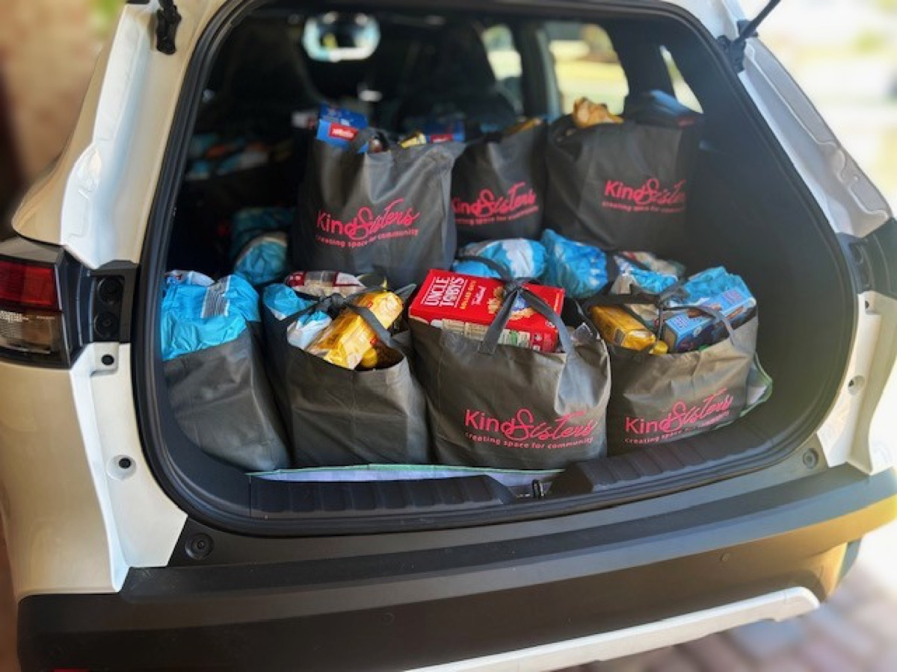
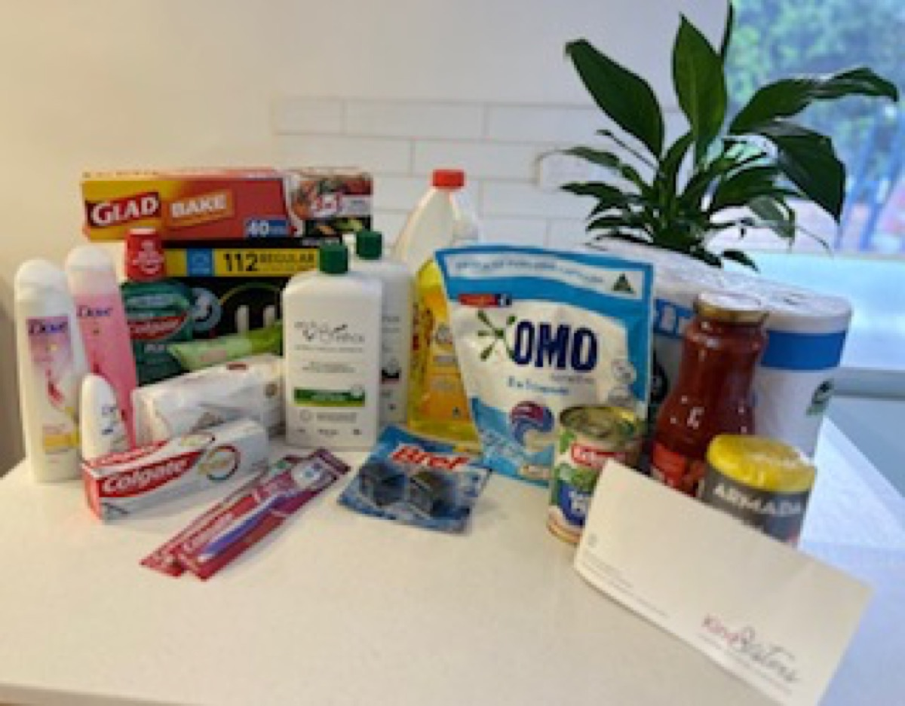
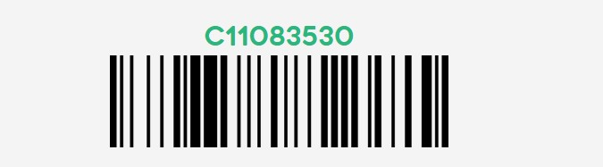

Donate to Kind Sisters

Kind Sisters donation write up – where donations are going.
Become a Friend of Kind Sisters with a monthly donation.
All donations of $2 or more are tax deductible. You can donate direct to our bank account below and also to our account at the Containers for Change project.
Donations of $2 or more are tax deductible.

Provide a family with hygiene products with every $50 donation.
Containers for Change
ID: C11083530
Please quote our Scheme ID when depositing refundable containers.
